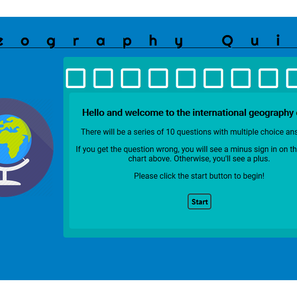
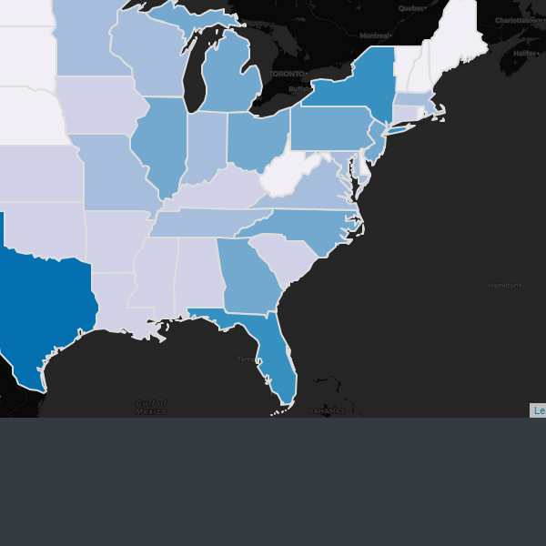
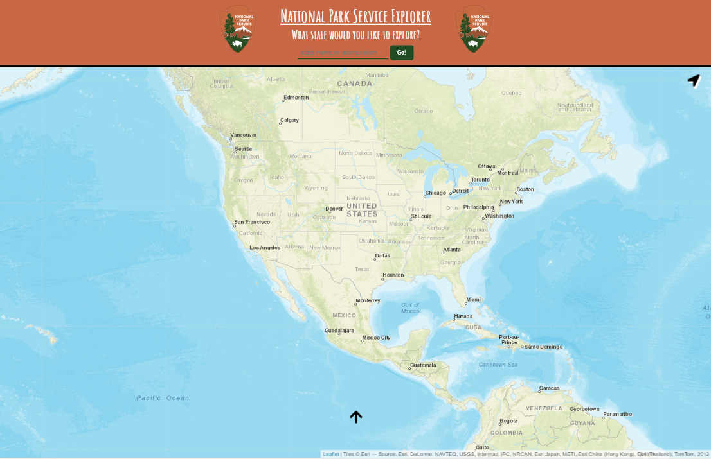

Hi, I'm Matt.
I am a fullstack developer & digital mapping enthusiast.
About me

At the very core of my being, I have a passion for building, problem-solving, and automating. I have
been fortunate enough in my life to be able to create a career out of my passions and that
culminates
through web development, GIS, and digital mapping. I try to take something positive from every
experience
and that has made me a lifelong learner.
When I'm not geeking out on maps and new JavaScript libraries, I'm raising my beautiful children and
spending time with my wife. I am also an old-time banjo player/enthusiast.
I would greatly enjoy working with your team of programmers/web developers/web mapping
enthusiasts so please reach out, if interested!
Projects
Quiz App
This simple quiz application iterates through a series of ten questions, giving you feedback based on your selection. When you're through, you can start over from scratch to try and improve your score. This project showcases my ability to utilize JavaScript and jQuery to create simple, event-driven application.
Technologies
- HTML
- CSS
- JS
- jQuery
Nationwide Choropleth Population Map
This is a simple chloropleth map where I utilized some pre-processing with the Pandas, GeoPandas, Shapely, and MatPlotLib Python libraries. Then used Leaflet.js to display the result of that analysis.
Technologies
- HTML
- CSS
- JS
- jQuery
- Leaflet
- Python
National Park Service Explorer
I created this project to demonstrate my ability to perform client-side API requests on the fly. This project is meant to help a perspective explorer find all of the sites maintained by the National Park Service within each state boundary. All if the state park information is coming from the NPS web API and the photos are comming from Google Places.
Technologies
- HTML
- CSS
- JS
- jQuery
- Leaflet